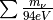
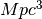
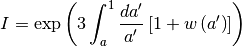
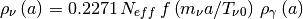
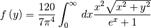
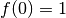
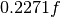
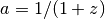

FLRW¶
-
class
astropy.cosmology.FLRW(H0, Om0, Ode0, Tcmb0=2.725, Neff=3.04, m_nu=<Quantity 0.0 eV>, Ob0=None, name=None) [edit on github][source]¶ Bases:
astropy.cosmology.core.CosmologyA class describing an isotropic and homogeneous (Friedmann-Lemaitre-Robertson-Walker) cosmology.
This is an abstract base class – you can’t instantiate examples of this class, but must work with one of its subclasses such as
LambdaCDMorwCDM.Parameters: H0 : float or scalar
QuantityHubble constant at z = 0. If a float, must be in [km/sec/Mpc]
Om0 : float
Omega matter: density of non-relativistic matter in units of the critical density at z=0. Note that this does not include massive neutrinos.
Ode0 : float
Omega dark energy: density of dark energy in units of the critical density at z=0.
Tcmb0 : float or scalar
Quantity, optionalTemperature of the CMB z=0. If a float, must be in [K]. Default: 2.725 [K]. Setting this to zero will turn off both photons and neutrinos (even massive ones).
Neff : float, optional
Effective number of Neutrino species. Default 3.04.
m_nu :
Quantity, optionalMass of each neutrino species. If this is a scalar Quantity, then all neutrino species are assumed to have that mass. Otherwise, the mass of each species. The actual number of neutrino species (and hence the number of elements of m_nu if it is not scalar) must be the floor of Neff. Typically this means you should provide three neutrino masses unless you are considering something like a sterile neutrino.
Ob0 : float or None, optional
Omega baryons: density of baryonic matter in units of the critical density at z=0. If this is set to None (the default), any computation that requires its value will raise an exception.
name : str, optional
Name for this cosmological object.
Notes
Class instances are static – you can’t change the values of the parameters. That is, all of the attributes above are read only.
Attributes Summary
H0Return the Hubble constant as an Quantityat z=0NeffNumber of effective neutrino species Ob0Omega baryon; baryonic matter density/critical density at z=0 Ode0Omega dark energy; dark energy density/critical density at z=0 Odm0Omega dark matter; dark matter density/critical density at z=0 Ogamma0Omega gamma; the density/critical density of photons at z=0 Ok0Omega curvature; the effective curvature density/critical density Om0Omega matter; matter density/critical density at z=0 Onu0Omega nu; the density/critical density of neutrinos at z=0 Tcmb0Temperature of the CMB as Quantityat z=0Tnu0Temperature of the neutrino background as Quantityat z=0critical_density0Critical density as Quantityat z=0hDimensionless Hubble constant: h = H_0 / 100 [km/sec/Mpc] has_massive_nuDoes this cosmology have at least one massive neutrino species? hubble_distanceHubble distance as Quantityhubble_timeHubble time as Quantitym_nuMass of neutrino species Methods Summary
H(z)Hubble parameter (km/s/Mpc) at redshift z.Ob(z)Return the density parameter for baryonic matter at redshift z.Ode(z)Return the density parameter for dark energy at redshift z.Odm(z)Return the density parameter for dark matter at redshift z.Ogamma(z)Return the density parameter for photons at redshift z.Ok(z)Return the equivalent density parameter for curvature at redshift z.Om(z)Return the density parameter for non-relativistic matter at redshift z.Onu(z)Return the density parameter for massless neutrinos at redshift z.Tcmb(z)Return the CMB temperature at redshift z.Tnu(z)Return the neutrino temperature at redshift z.abs_distance_integrand(z)Integrand of the absorption distance. absorption_distance(z)Absorption distance at redshift z.age(z)Age of the universe in Gyr at redshift z.angular_diameter_distance(z)Angular diameter distance in Mpc at a given redshift. angular_diameter_distance_z1z2(z1, z2)Angular diameter distance between objects at 2 redshifts. arcsec_per_kpc_comoving(z)Angular separation in arcsec corresponding to a comoving kpc at redshift z.arcsec_per_kpc_proper(z)Angular separation in arcsec corresponding to a proper kpc at redshift z.clone(**kwargs)Returns a copy of this object, potentially with some changes. comoving_distance(z)Comoving line-of-sight distance in Mpc at a given redshift. comoving_transverse_distance(z)Comoving transverse distance in Mpc at a given redshift. comoving_volume(z)Comoving volume in cubic Mpc at redshift z.critical_density(z)Critical density in grams per cubic cm at redshift z.de_density_scale(z)Evaluates the redshift dependence of the dark energy density. differential_comoving_volume(z)Differential comoving volume at redshift z. distmod(z)Distance modulus at redshift z.efunc(z)Function used to calculate H(z), the Hubble parameter. inv_efunc(z)Inverse of efunc. kpc_comoving_per_arcmin(z)Separation in transverse comoving kpc corresponding to an arcminute at redshift z.kpc_proper_per_arcmin(z)Separation in transverse proper kpc corresponding to an arcminute at redshift z.lookback_distance(z)The lookback distance is the light travel time distance to a given redshift. lookback_time(z)Lookback time in Gyr to redshift z.lookback_time_integrand(z)Integrand of the lookback time. luminosity_distance(z)Luminosity distance in Mpc at redshift z.nu_relative_density(z)Neutrino density function relative to the energy density in photons. scale_factor(z)Scale factor at redshift z.w(z)The dark energy equation of state. Attributes Documentation
-
Neff¶ Number of effective neutrino species
-
Ob0¶ Omega baryon; baryonic matter density/critical density at z=0
-
Ode0¶ Omega dark energy; dark energy density/critical density at z=0
-
Odm0¶ Omega dark matter; dark matter density/critical density at z=0
-
Ogamma0¶ Omega gamma; the density/critical density of photons at z=0
-
Ok0¶ Omega curvature; the effective curvature density/critical density at z=0
-
Om0¶ Omega matter; matter density/critical density at z=0
-
Onu0¶ Omega nu; the density/critical density of neutrinos at z=0
-
h¶ Dimensionless Hubble constant: h = H_0 / 100 [km/sec/Mpc]
-
has_massive_nu¶ Does this cosmology have at least one massive neutrino species?
-
m_nu¶ Mass of neutrino species
Methods Documentation
-
H(z) [edit on github][source]¶ Hubble parameter (km/s/Mpc) at redshift
z.Parameters: z : array-like
Input redshifts.
Returns: H :
QuantityHubble parameter at each input redshift.
-
Ob(z) [edit on github][source]¶ Return the density parameter for baryonic matter at redshift
z.Parameters: z : array-like
Input redshifts.
Returns: Ob : ndarray, or float if input scalar
The density of baryonic matter relative to the critical density at each redshift.
Raises: ValueError
If Ob0 is None.
-
Ode(z) [edit on github][source]¶ Return the density parameter for dark energy at redshift
z.Parameters: z : array-like
Input redshifts.
Returns: Ode : ndarray, or float if input scalar
The density of non-relativistic matter relative to the critical density at each redshift.
-
Odm(z) [edit on github][source]¶ Return the density parameter for dark matter at redshift
z.Parameters: z : array-like
Input redshifts.
Returns: Odm : ndarray, or float if input scalar
The density of non-relativistic dark matter relative to the critical density at each redshift.
Raises: ValueError
If Ob0 is None.
Notes
—–
This does not include neutrinos, even if non-relativistic
at the redshift of interest.
-
Ogamma(z) [edit on github][source]¶ Return the density parameter for photons at redshift
z.Parameters: z : array-like
Input redshifts.
Returns: Ogamma : ndarray, or float if input scalar
The energy density of photons relative to the critical density at each redshift.
-
Ok(z) [edit on github][source]¶ Return the equivalent density parameter for curvature at redshift
z.Parameters: z : array-like
Input redshifts.
Returns: Ok : ndarray, or float if input scalar
The equivalent density parameter for curvature at each redshift.
-
Om(z) [edit on github][source]¶ Return the density parameter for non-relativistic matter at redshift
z.Parameters: z : array-like
Input redshifts.
Returns: Om : ndarray, or float if input scalar
The density of non-relativistic matter relative to the critical density at each redshift.
Notes
This does not include neutrinos, even if non-relativistic at the redshift of interest; see
Onu.
-
Onu(z) [edit on github][source]¶ Return the density parameter for massless neutrinos at redshift
z.Parameters: z : array-like
Input redshifts.
Returns: Onu : ndarray, or float if input scalar
The energy density of neutrinos relative to the critical density at each redshift. Note that this includes their kinetic energy (if they have mass), so it is not equal to the commonly used , which does not include kinetic energy.
-
Tcmb(z) [edit on github][source]¶ Return the CMB temperature at redshift
z.Parameters: z : array-like
Input redshifts.
Returns: Tcmb :
QuantityThe temperature of the CMB in K.
-
Tnu(z) [edit on github][source]¶ Return the neutrino temperature at redshift
z.Parameters: z : array-like
Input redshifts.
Returns: Tnu :
QuantityThe temperature of the cosmic neutrino background in K.
-
abs_distance_integrand(z) [edit on github][source]¶ Integrand of the absorption distance.
Parameters: z : float or array
Input redshift.
Returns: X : float or array
The integrand for the absorption distance
References
See Hogg 1999 section 11.
-
absorption_distance(z) [edit on github][source]¶ Absorption distance at redshift
z.This is used to calculate the number of objects with some cross section of absorption and number density intersecting a sightline per unit redshift path.
Parameters: z : array-like
Input redshifts. Must be 1D or scalar.
Returns: d : float or ndarray
Absorption distance (dimensionless) at each input redshift.
References
Hogg 1999 Section 11. (astro-ph/9905116) Bahcall, John N. and Peebles, P.J.E. 1969, ApJ, 156L, 7B
-
age(z) [edit on github][source]¶ Age of the universe in Gyr at redshift
z.Parameters: z : array-like
Input redshifts. Must be 1D or scalar.
Returns: t :
QuantityThe age of the universe in Gyr at each input redshift.
See also
z_at_value- Find the redshift corresponding to an age.
-
angular_diameter_distance(z) [edit on github][source]¶ Angular diameter distance in Mpc at a given redshift.
This gives the proper (sometimes called ‘physical’) transverse distance corresponding to an angle of 1 radian for an object at redshift
z.Weinberg, 1972, pp 421-424; Weedman, 1986, pp 65-67; Peebles, 1993, pp 325-327.
Parameters: z : array-like
Input redshifts. Must be 1D or scalar.
Returns: d :
QuantityAngular diameter distance in Mpc at each input redshift.
-
angular_diameter_distance_z1z2(z1, z2) [edit on github][source]¶ Angular diameter distance between objects at 2 redshifts. Useful for gravitational lensing.
Parameters: z1, z2 : array-like, shape (N,)
Input redshifts. z2 must be large than z1.
Returns: d :
Quantity, shape (N,) or single if input scalarThe angular diameter distance between each input redshift pair.
-
arcsec_per_kpc_comoving(z) [edit on github][source]¶ Angular separation in arcsec corresponding to a comoving kpc at redshift
z.Parameters: z : array-like
Input redshifts. Must be 1D or scalar.
Returns: theta :
QuantityThe angular separation in arcsec corresponding to a comoving kpc at each input redshift.
-
arcsec_per_kpc_proper(z) [edit on github][source]¶ Angular separation in arcsec corresponding to a proper kpc at redshift
z.Parameters: z : array-like
Input redshifts. Must be 1D or scalar.
Returns: theta :
QuantityThe angular separation in arcsec corresponding to a proper kpc at each input redshift.
-
clone(**kwargs) [edit on github][source]¶ Returns a copy of this object, potentially with some changes.
Returns: newcos : Subclass of FLRW
A new instance of this class with the specified changes.
Notes
This assumes that the values of all constructor arguments are available as properties, which is true of all the provided subclasses but may not be true of user-provided ones. You can’t change the type of class, so this can’t be used to change between flat and non-flat. If no modifications are requested, then a reference to this object is returned.
Examples
To make a copy of the Planck13 cosmology with a different Omega_m and a new name:
>>> from astropy.cosmology import Planck13 >>> newcos = Planck13.clone(name="Modified Planck 2013", Om0=0.35)
-
comoving_distance(z) [edit on github][source]¶ Comoving line-of-sight distance in Mpc at a given redshift.
The comoving distance along the line-of-sight between two objects remains constant with time for objects in the Hubble flow.
Parameters: z : array-like
Input redshifts. Must be 1D or scalar.
Returns: d :
QuantityComoving distance in Mpc to each input redshift.
-
comoving_transverse_distance(z) [edit on github][source]¶ Comoving transverse distance in Mpc at a given redshift.
This value is the transverse comoving distance at redshift
zcorresponding to an angular separation of 1 radian. This is the same as the comoving distance if omega_k is zero (as in the current concordance lambda CDM model).Parameters: z : array-like
Input redshifts. Must be 1D or scalar.
Returns: d :
QuantityComoving transverse distance in Mpc at each input redshift.
Notes
This quantity also called the ‘proper motion distance’ in some texts.
-
comoving_volume(z) [edit on github][source]¶ Comoving volume in cubic Mpc at redshift
z.This is the volume of the universe encompassed by redshifts less than
z. For the case of omega_k = 0 it is a sphere of radiuscomoving_distancebut it is less intuitive if omega_k is not 0.Parameters: z : array-like
Input redshifts. Must be 1D or scalar.
Returns: V :
QuantityComoving volume in  at each input redshift.
-
critical_density(z) [edit on github][source]¶ Critical density in grams per cubic cm at redshift
z.Parameters: z : array-like
Input redshifts.
Returns: rho :
QuantityCritical density in g/cm^3 at each input redshift.
-
de_density_scale(z) [edit on github][source]¶ Evaluates the redshift dependence of the dark energy density.
Parameters: z : array-like
Input redshifts.
Returns: I : ndarray, or float if input scalar
The scaling of the energy density of dark energy with redshift.
Notes
The scaling factor, I, is defined by
 ,
and is given by
,
and is given by
It will generally helpful for subclasses to overload this method if the integral can be done analytically for the particular dark energy equation of state that they implement.
-
differential_comoving_volume(z) [edit on github][source]¶ Differential comoving volume at redshift z.
Useful for calculating the effective comoving volume. For example, allows for integration over a comoving volume that has a sensitivity function that changes with redshift. The total comoving volume is given by integrating differential_comoving_volume to redshift z and multiplying by a solid angle.
Parameters: z : array-like
Input redshifts.
Returns: dV :
QuantityDifferential comoving volume per redshift per steradian at each input redshift.
-
distmod(z) [edit on github][source]¶ Distance modulus at redshift
z.The distance modulus is defined as the (apparent magnitude - absolute magnitude) for an object at redshift
z.Parameters: z : array-like
Input redshifts. Must be 1D or scalar.
Returns: distmod :
QuantityDistance modulus at each input redshift, in magnitudes
See also
z_at_value- Find the redshift corresponding to a distance modulus.
-
efunc(z) [edit on github][source]¶ Function used to calculate H(z), the Hubble parameter.
Parameters: z : array-like
Input redshifts.
Returns: E : ndarray, or float if input scalar
The redshift scaling of the Hubble constant.
Notes
The return value, E, is defined such that
 .
.It is not necessary to override this method, but if de_density_scale takes a particularly simple form, it may be advantageous to.
-
inv_efunc(z) [edit on github][source]¶ Inverse of efunc.
Parameters: z : array-like
Input redshifts.
Returns: E : ndarray, or float if input scalar
The redshift scaling of the inverse Hubble constant.
-
kpc_comoving_per_arcmin(z) [edit on github][source]¶ Separation in transverse comoving kpc corresponding to an arcminute at redshift
z.Parameters: z : array-like
Input redshifts. Must be 1D or scalar.
Returns: d :
QuantityThe distance in comoving kpc corresponding to an arcmin at each input redshift.
-
kpc_proper_per_arcmin(z) [edit on github][source]¶ Separation in transverse proper kpc corresponding to an arcminute at redshift
z.Parameters: z : array-like
Input redshifts. Must be 1D or scalar.
Returns: d :
QuantityThe distance in proper kpc corresponding to an arcmin at each input redshift.
-
lookback_distance(z) [edit on github][source]¶ The lookback distance is the light travel time distance to a given redshift. It is simply c * lookback_time. It may be used to calculate the proper distance between two redshifts, e.g. for the mean free path to ionizing radiation.
Parameters: z : array-like
Input redshifts. Must be 1D or scalar
Returns: d :
QuantityLookback distance in Mpc
-
lookback_time(z) [edit on github][source]¶ Lookback time in Gyr to redshift
z.The lookback time is the difference between the age of the Universe now and the age at redshift
z.Parameters: z : array-like
Input redshifts. Must be 1D or scalar
Returns: t :
QuantityLookback time in Gyr to each input redshift.
See also
z_at_value- Find the redshift corresponding to a lookback time.
-
lookback_time_integrand(z) [edit on github][source]¶ Integrand of the lookback time.
Parameters: z : float or array-like
Input redshift.
Returns: I : float or array
The integrand for the lookback time
References
Eqn 30 from Hogg 1999.
-
luminosity_distance(z) [edit on github][source]¶ Luminosity distance in Mpc at redshift
z.This is the distance to use when converting between the bolometric flux from an object at redshift
zand its bolometric luminosity.Parameters: z : array-like
Input redshifts. Must be 1D or scalar.
Returns: d :
QuantityLuminosity distance in Mpc at each input redshift.
See also
z_at_value- Find the redshift corresponding to a luminosity distance.
References
Weinberg, 1972, pp 420-424; Weedman, 1986, pp 60-62.
-
nu_relative_density(z) [edit on github][source]¶ Neutrino density function relative to the energy density in photons.
Parameters: z : array like
Redshift
Returns: f : ndarray, or float if z is scalar
The neutrino density scaling factor relative to the density in photons at each redshift
Notes
The density in neutrinos is given by

where

assuming that all neutrino species have the same mass. If they have different masses, a similar term is calculated for each one. Note that f has the asymptotic behavior . This method returns  using an analytical fitting formula given in Komatsu et al. 2011, ApJS 192, 18.
-
scale_factor(z) [edit on github][source]¶ Scale factor at redshift
z.The scale factor is defined as .
Parameters: z : array-like
Input redshifts.
Returns: a : ndarray, or float if input scalar
Scale factor at each input redshift.
-
w(z) [edit on github][source]¶ The dark energy equation of state.
Parameters: z : array-like
Input redshifts.
Returns: w : ndarray, or float if input scalar
The dark energy equation of state
Notes
The dark energy equation of state is defined as
 , where
, where  is the
pressure at redshift z and
is the
pressure at redshift z and  is the density
at redshift z, both in units where c=1.
is the density
at redshift z, both in units where c=1.This must be overridden by subclasses.
-